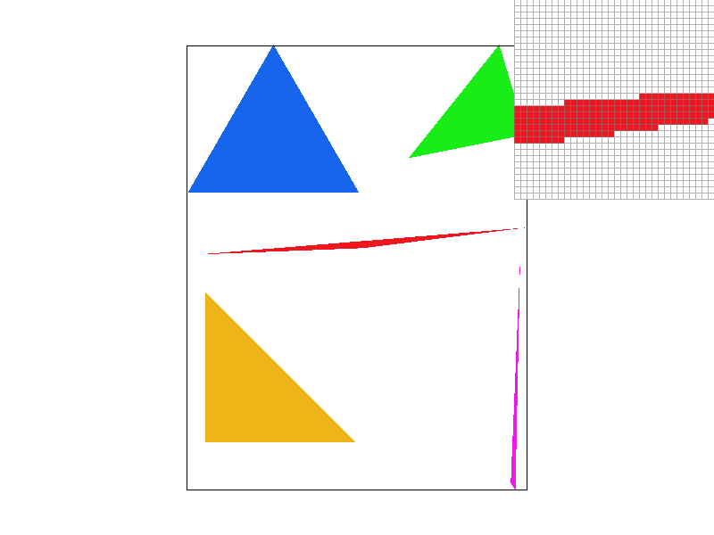
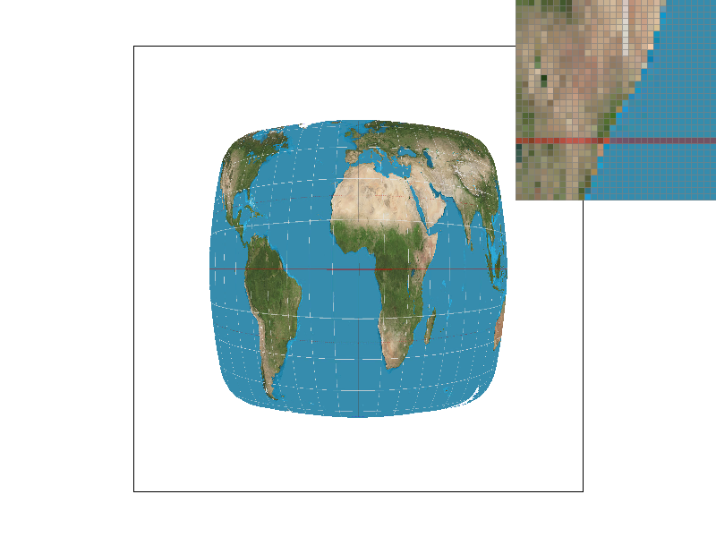
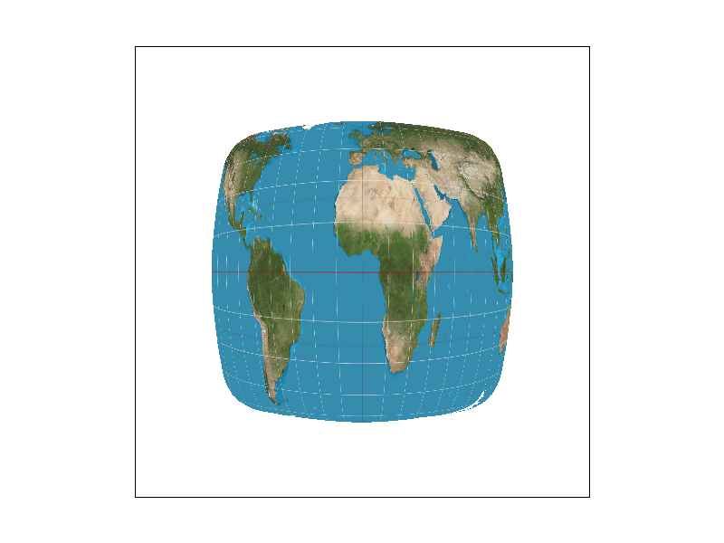
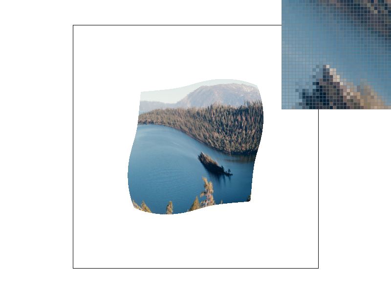
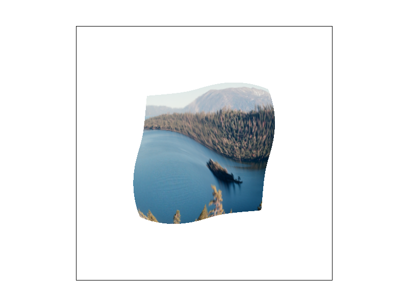

Overview
Give a high-level overview of what you implemented in this homework Think about what you've built as a whole. Share your thoughts on what interesting things you've learned from completing the homework.
Section I: Rasterization
Part 1: Rasterizing single-color triangles
In this task, we rasterized the triangles by using the sampling methods described in class.
First, we defined three vertices for each triangles and checked if they were in the same winding order.
If they were not in the same winding order, we switched them accordingly.
This step is essential because it helps determine the direction in which the triangle is facing, which affects how it's rendered and shaded.
Then, we found the bounding box defined by coordinates x limits and y limits of the vertices using the ceiling and floor of the limits so that
we don't have to walk through the whole canvas for rasterization. Finally, we implemented the point-in-triangle three-line test, the method introduced in the lecture,
to determine whether the pixel within the bounding box is inside the triangle. If the pixel is inside the triangle, we fill it with a single color.
Repeatedly, we could fill all the shapes on the screen.
Our algorithm is no worse than one that checks each sample within the bounding box of the triangle. This is because what we did was exactly traversing
from the minimum to the maximum of the bounding box, checking each sample within the bounding box of the triangle.

|

|
Part 2: Antialiasing triangles

|

|

|

|
Part 3: Transforms
We tried to make the cubeman do a stretching exercise. We first rotated the torso by 60 degrees and then moved the left arm 5 pixels right and 30 pixels up relative to the torso. We also changed the cubeman's customs by modifying the color from #EF161F(red) to #00171F(rich black) and the pattern by changing the winding vertices of triangles.
Section II: Sampling
Part 4: Barycentric coordinates
Part 5: "Pixel sampling" for texture mapping
Pixel sampling is to determine the color of pixels on a surface.In our code, we used RasterizerImp::rasterize_textured_triangle function to
set a triangle, calculate the bounding box, and used Color Texture::sample function set P key for switch the pixel sampling method(sample_nearest and
sample_bilinear). The two pixel sampling methods, nearest and bilinear, are similar to the nearest/linear methods in classification models. The P_nearest
method samples the color by the cloest pixel, and the P_bilinear samples the color by the average_color_weight based on 4 pixels surrounding the target.
The test1.svg show a good example that bilinear sampling clearly defeats nearest sampling, especially in the 1 sample per pixel case. Here are the
screenshots using nearest sampling at 1 sample per pixel, nearest sampling at 16 samples per pixel, bilinear sampling at 1 sample per pixel, and
bilinear sampling at 16 samples per pixel. From the images, we found that the 16 samples per pixel images look better than the 1 samples per pixel
images, and the bilinear sampling performs generally better than the nearest sampling.
|

|

|
|
|
|
We found that generally the bilinear sampling performs better than the nearest sampling, however, in some colorful cases(test3 and test5), the two sampling methods appear similar, and when we change sample rate from 1 to 16, the difference between these two sampling methods become less pronounced.
Part 6: "Level sampling" with mipmaps for texture mapping
Level sampling is a method for mapping texture to screen space with choosing a suitable level for a texture based on (du/dx,dv/dx) and
(du/dy,dv/dy). For this task, we had an implementation of the Texture::sample method, where we calculated the barycentric coordinates
of texture mapping (uv) for 3 points: the target pixel (x,y), and its immediate neighbors (x+1,y) and (x,y+1). These coordinates are
in the SampleParams structure as sp.p_uv, sp.p_dx_uv, and sp.p_dy_uv. After that, we proceed to compute the differences between them
(sp.p_dx_uv - sp.p_uv and sp.p_dy_uv - sp.p_uv) in the Texture::get_level function. This step calculated how quickly the texture details
change as moving across the surface. We further refined this data by scaling these differential vectors in accordance with the texture's
full resolution, adjusting them by the texture's width and height. After doing these, we can select the best mipmap level for rendering
depending on the level sampling method chosen—L_NEAREST for selecting the nearest mipmap level, or L_LINEAR for a linear interpolation
between adjacent mipmaps—we can achieve a balance between performance and quality.
For pixel sampling, P_nearest is faster and has less memory usage, but may cause the image look more pixelated. P_bilinear needs more
time and use more memory of computer, but has a better performance on image quality. For level sampling, L_zero is faster and has less memory
usage than L_nearest and L_linear, since L_nearest and L_linear store multiple mipmaps, but L_nearest and L_linear have better antialiasing
power to perform image clearer. For number of samples per pixel, increasing the number of samples per pixel improves output quality by averaging
multiple samples within each pixel, so that improve the image's smoothness. However, this increases memory usage and slow the speed.
We chose a picture of Lake Tahoe to compare the four versions of the image with the combinations of L_ZERO and P_NEAREST, L_ZERO and P_LINEAR,
L_NEAREST and P_NEAREST, as well as L_NEAREST and P_LINEAR.
|
|

|
|

|

|
Section III: Art Competition
If you are not participating in the optional art competition, don't worry about this section!